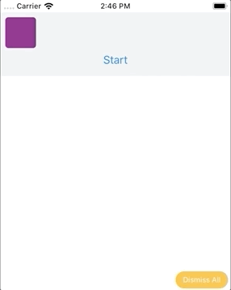
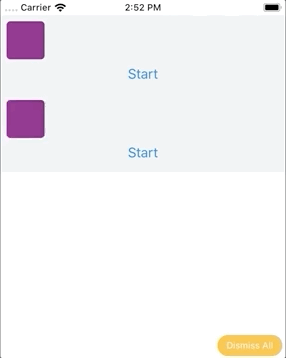
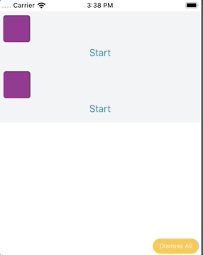

React-native-reanimated is advertised to be more performant comparing to React native’s Animated API.
It’s React Native’s Animated library but reimplemented, which has the following benefits:
- Native performance: declare animation in JS, but run them on native UI thread.
- Precise Animations it’s supposed to more precision and provide more detailed control of animation
- Mostly backwards compatible with the Animated API from React Native
-> Provide greater flexibility, control and performance
You can also read more about the motivation of creating this library at
import React from 'react';
import { StyleSheet, Text, View, Button } from 'react-native';
import Animated, { Easing } from 'react-native-reanimated';
const { Value, timing } = Animated;
export default class Animation3 extends React.Component {
constructor(props) {
super(props);
this._transX = new Value(0);
this._config = {
duration: 5000,
toValue: 180,
easing: Easing.inOut(Easing.ease),
};
this._anim = timing(this._transX, this._config);
}
componentDidMount() {
this._anim.start();
}
render() {
return (
<View style={styles.container}>
<Animated.View style={[styles.box, { transform: [{ translateX: this._transX }] }]} />
<Button
onPress={() => {
this._anim.start();
}}
title="Start"
/>
</View>
);
}
}

COMPARISION WITH ANIMATED API
… so, let’s see the wonders of using processing animations on UI thread
We will introduce our JS blocker, which basically is an function that will log in console something in 2s
It will call a while loop executed unlimited times by CPU, which would cause the JS thread to freeze a bit 🥶
componentDidMount() {
this.sleep(2000);
this._anim.start();
}
sleep(miliseconds) {
var currentTime = new Date().getTime();
while (currentTime + miliseconds >= new Date().getTime()) {
console.log('blocker');
}
}
-> The animation will skip frames when it’s used on JS thread
See this example. The 1st one is using React-native-reanimated, the 2nd one is using React Native’s Animated API without useNativeDriver

As you can see, without using native driver, animated being processed on JS thread has skipped many frames
When you set useNativeDriver for animated api -> buttery smooth 🧀

My thoughts:As for creating animations, this library can be quite useful for implementing animations that the useNativeDriver of Animated API doesn’t work